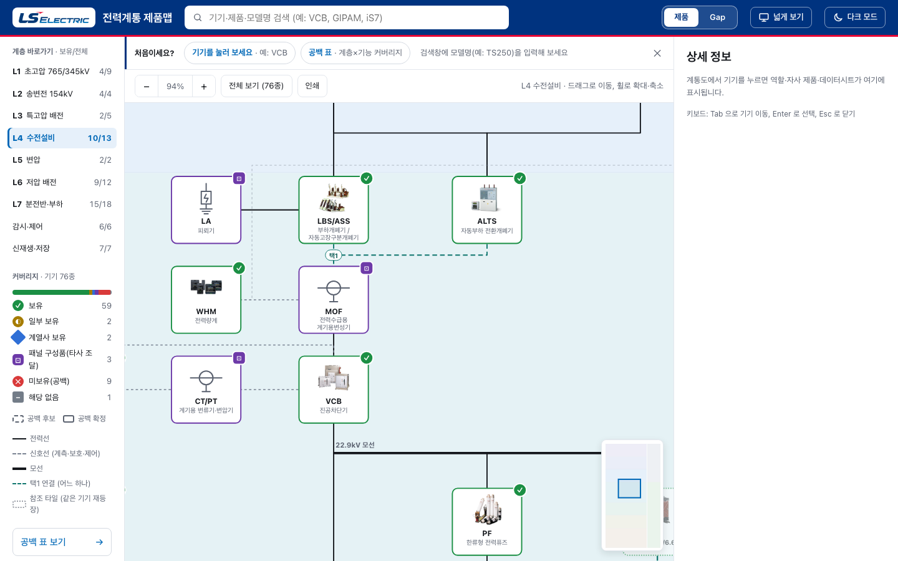
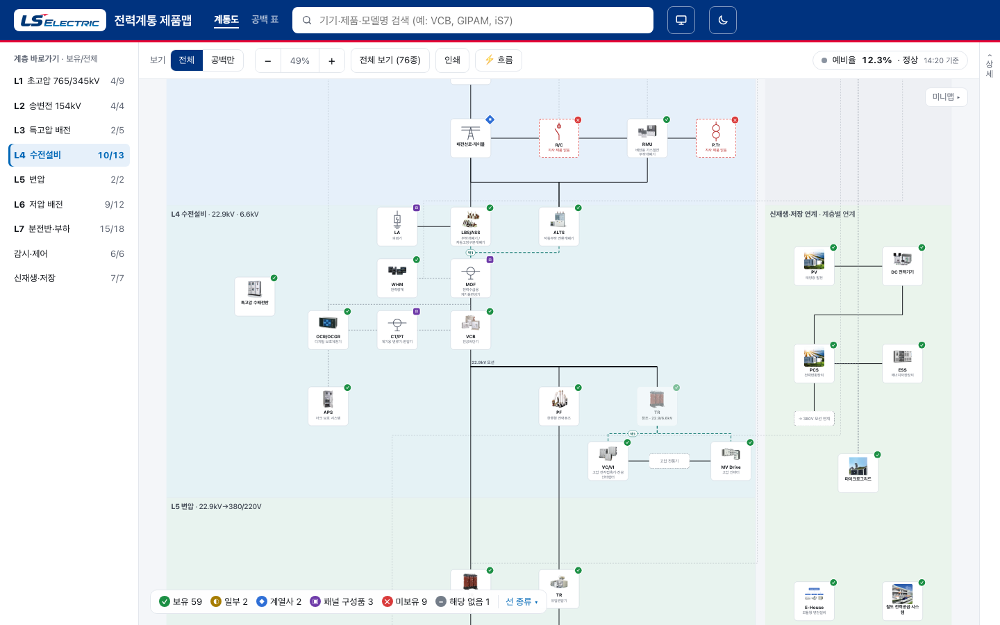
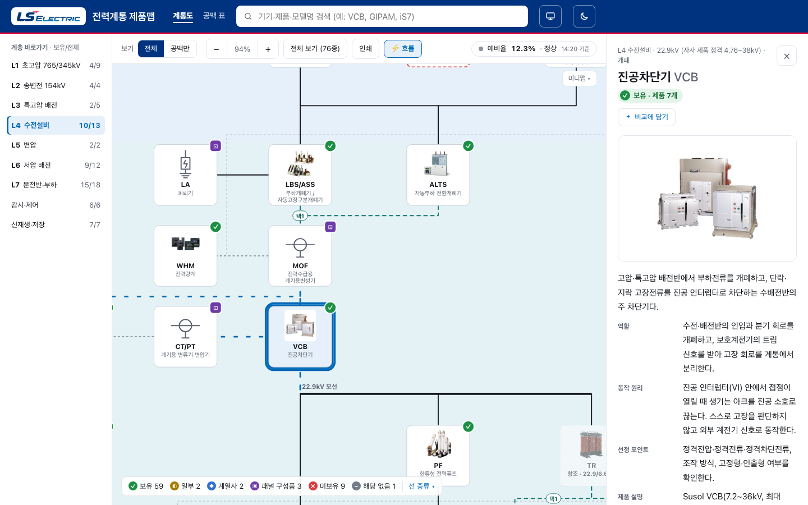
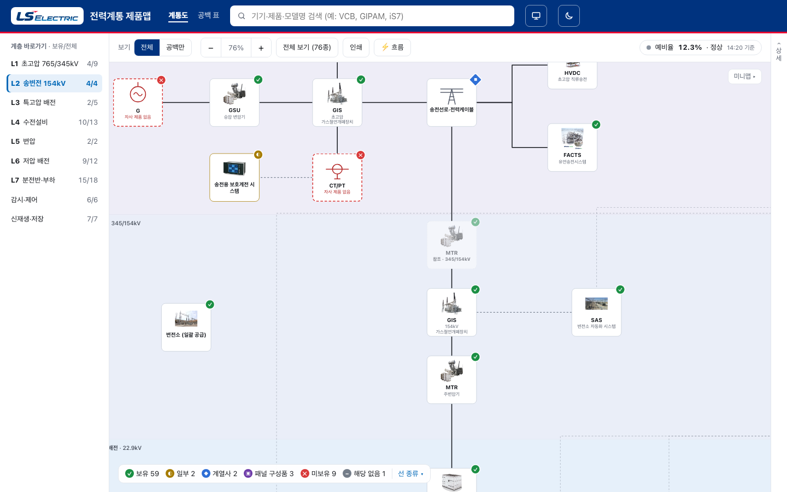
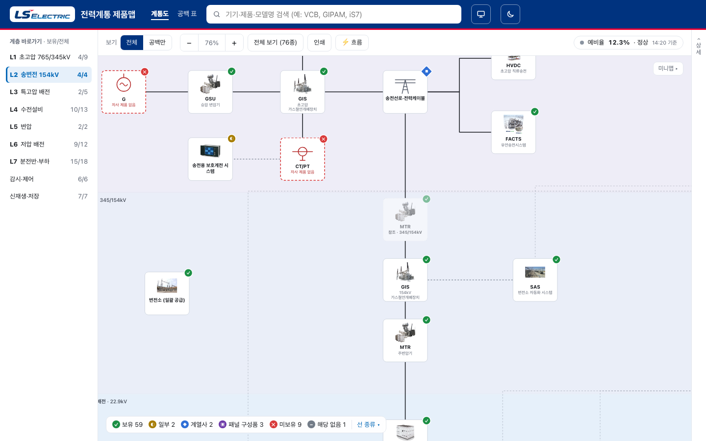
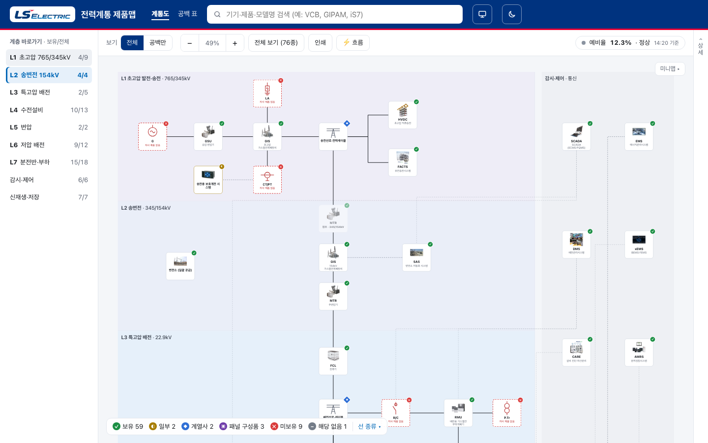
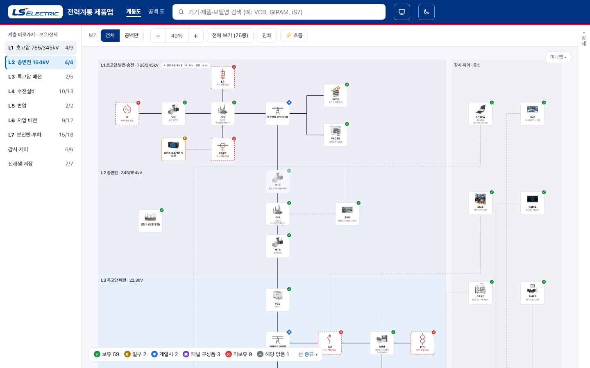
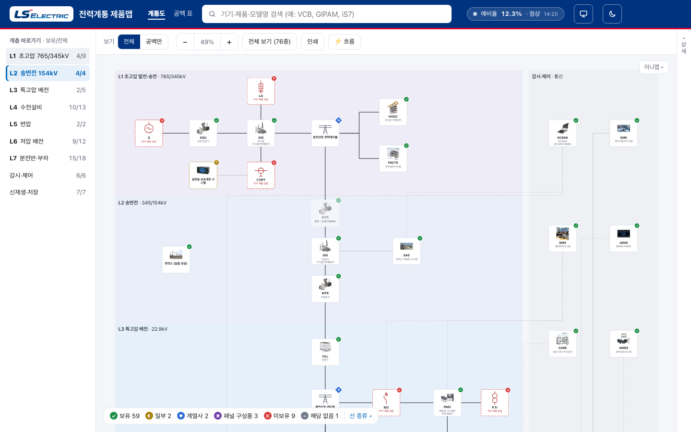

디자이너 토론 합의안 시안 · 2026-11-19
전력계통 제품맵 화면 시안
지금 화면에 토론 합의안을 임시로 덧입혀 찍은 시안입니다. 실제 코드는 아직 바꾸지 않았습니다. 사진을 누르면 원본 크기로 열립니다.
1. 지금 vs 합의안 (P0 적용)
같은 L4 수전설비 화면입니다.

지금사이드바에 계층·범례·선 범례·공백 표 버튼이 쌓여 있고, 헤더에 제품/Gap·넓게 보기·다크 모드 텍스트 버튼, 계통도 위 띠 2줄, 빈 상세 패널 360px

시안
- 사이드바는 계층 목록만
- 범례는 왼쪽 아래 한 줄 카드(선 종류는 ▾로 접힘)
- 헤더: 서비스명 옆 "계통도 · 공백 표" 메뉴, 오른쪽 아이콘 2개
- 도구줄 한 줄: 보기 [전체|공백만] · 확대 · 인쇄 · ⚡흐름 · 수급 알약
- 타일 테두리 회색, 미보유만 빨간 점선
- 빈 상세 패널은 오른쪽 30px 레일로 접힘, 미니맵은 오른쪽 위 버튼
2. 기기를 골랐을 때 + 전기 흐름 켬
VCB를 고르고 ⚡흐름을 켠 상태입니다. 선택 타일은 바깥 파란 링, VCB에 연결된 선만 파란 대시가 흐릅니다(사진은 멈춘 장면). 상세 패널은 레일이 마지막 폭으로 열린 모습입니다.

시안흐름 속도(초당 24px vs 48px)는 사진으로 비교가 안 돼서, 적용할 때 두 가지를 실제로 돌려 보고 고르시면 됩니다.
3. 고르실 것 ① 일부 보유 테두리
L1 화면. 가운데 아래 "송전용 보호계전 시스템"이 일부 보유입니다.

A안 · D1·D3일부 보유도 황색 1.5px 테두리. 공백만 보기와 같은 규칙(미보유+일부 보유)이라 한눈에 보임

B안 · D2·D5테두리는 회색, ◐ 배지로만 표시. 색이 미보유에만 쓰여 화면이 더 차분함
4. 고르실 것 ② 실시간 수급 위치
숫자는 예시입니다. 데이터는 마켓뉴스와 같은 공공데이터포털 키로 받습니다.

A안 · 도구줄 · D1·D2계통도 바로 위 오른쪽. 확대·축소와 상관없이 같은 크기, 계통도 화면에서만 보임

B안 · L1 밴드 · D3L1 이름표 옆이라 의미는 잘 맞음. 다만 계통도를 축소하면 글자도 함께 작아지고, 다른 계층을 보면 화면 밖으로 나감

C안 · 헤더 · D4모든 화면에서 늘 보임. 마켓뉴스 헤더와 비슷한 느낌이지만 헤더가 다시 복잡해짐
시안은 지금 화면 위에 임시 스타일을 덧입힌 것이라 간격·글자 크기가 실제 적용본과 조금 다를 수 있습니다. 상세 패널 순서 변경(제품 먼저), 밴드 3톤, 모바일 시안은 이번 장에 넣지 않았습니다.